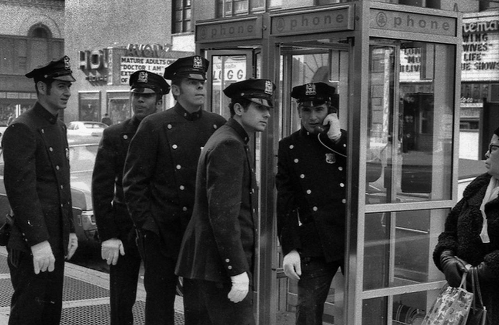
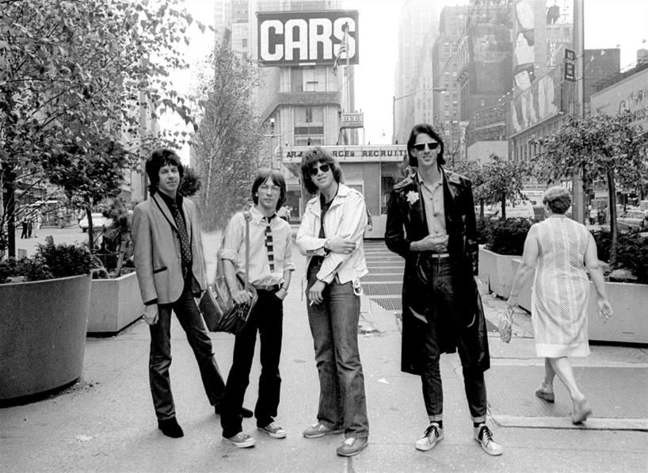
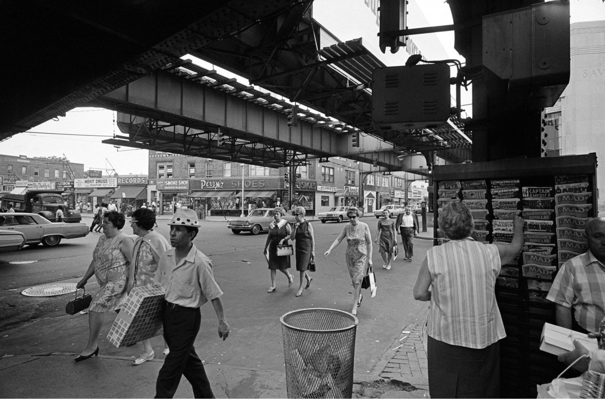
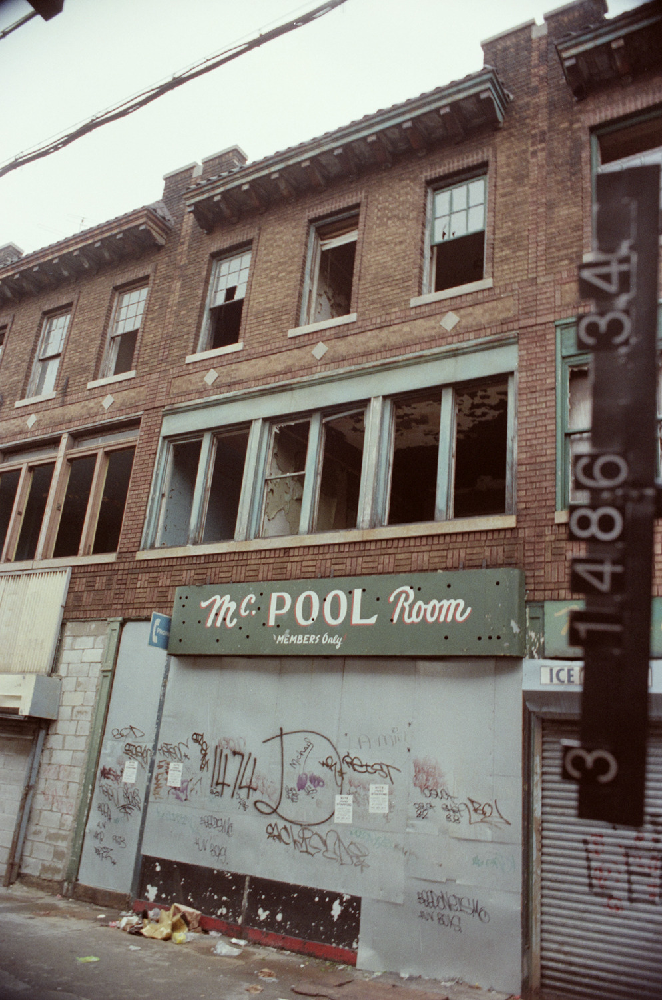
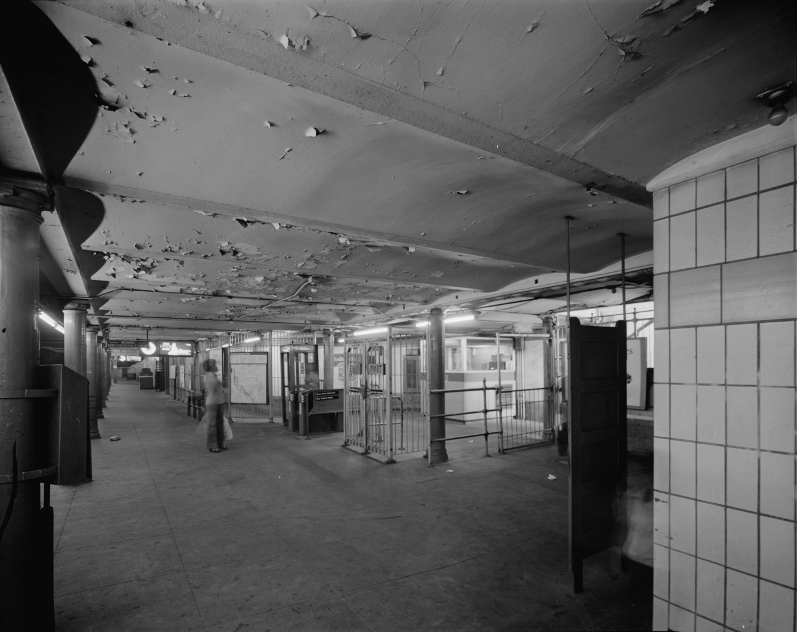
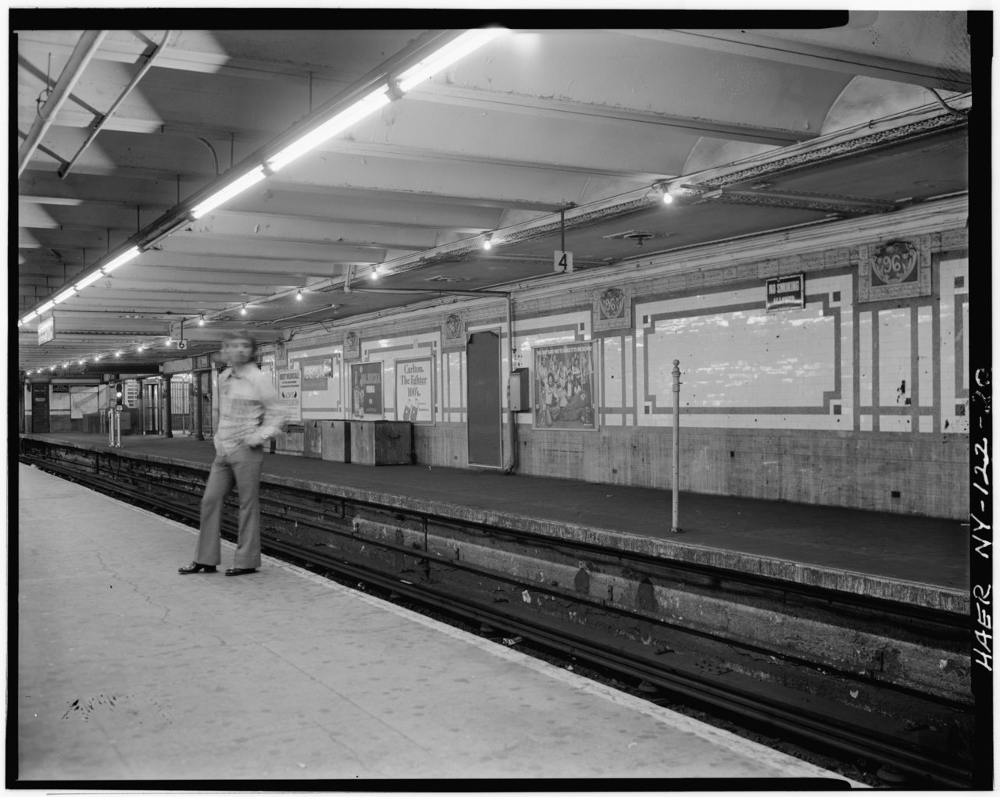
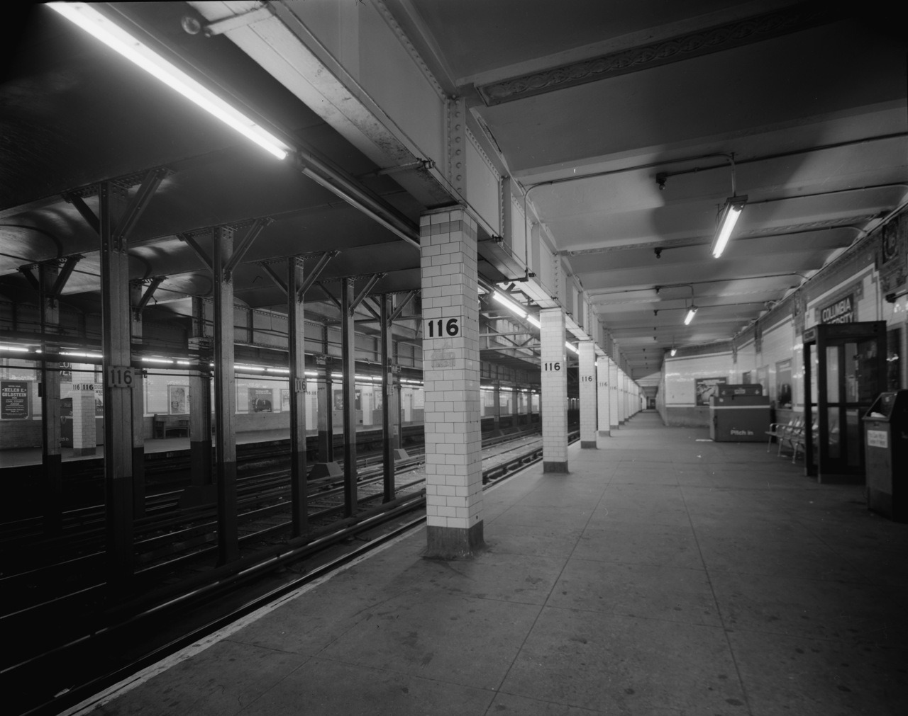
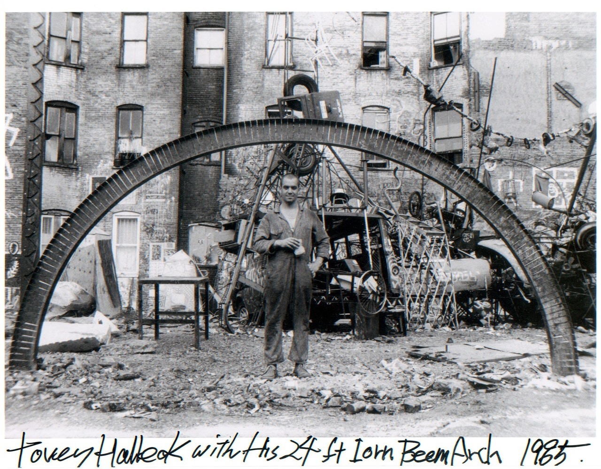
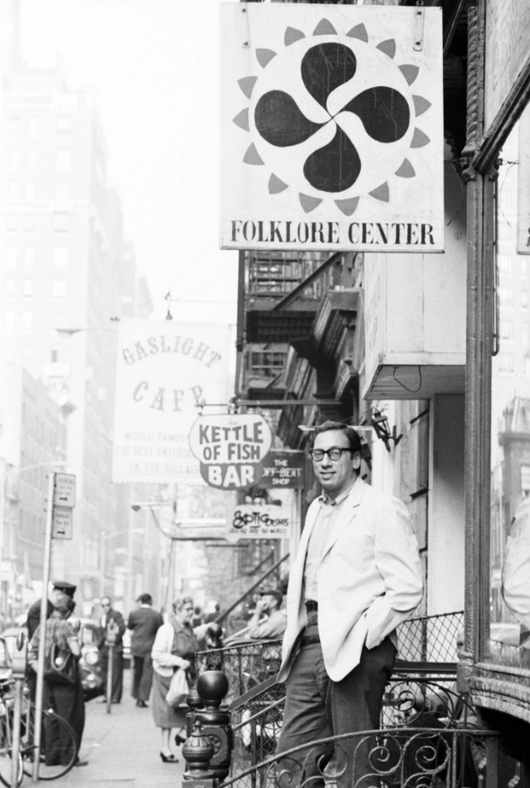

Coney Island boardwalk, 1986
Coney Island boardwalk, 1986

Ohrbach’s, 1979

Cops at a payphone, 1969


Run-DMC and The Beastie Boys in Manhattan, 1987
Well, I’m an atheist, so yes. But that’s probably not what you meant.
It sure as hell is a very different place, with a very different non-theistic spirit to it. I’m sure there’s no going back.

Garbage strike, 1975

The Cars in Times Square, 1979

Debbie Harry on 6th Ave, 1978

Sidney Poitier in Times Square, 1959

29,000 followers! Thanks, people!

Columbus Ave on the Upper West Side, 1983

Jamaica Avenue, Queens, 1968

Bushwick, Brooklyn, 1474 Broadway in the 1980s

Atlantic Villa, a bungalow complex in Coney Island, West 33rd Street and Surf Avenue, 1962.

Fernando Natalici, Max Kansas City, NewYork, 1975

The East Side in 1973. All kinds of pretentious.

Classic.

This is what Chelsea looked like in the 70s.

The Hayden Planetarium being built in the 1930s.

Block party on 89th Street, 1971

207th Street subway entrance, 1978

79th Street uptown platform and control area 1978

59th Street Columbus Circle station 1978

96th Street subway platform in the 70s

116th Street subway, 1978

The Bronx is on fire, 1982

Club Lunch sandwich shop. East Broadway, 1983

Tovey Halleck under his installation in the Rivington Sculpture Garden, 1985

89th Street in 1971. Closed to traffic for a street fair.

Dave Gahr Izzy Young Outside His “Folklore Center,” Greenwich Village, New York City 1963
Izzy Young, the founder of the Folklore Center and the early pater familias of the young and burgeoning “great folk scare” (as Dave Van Ronk called it) in the Village has died. Young established the Folklore Center on MacDougal St in 1957 and kept it open until 1973. During that time, he presented Bob Dylan in his first public concert, as well as performances by Van Ronk, Phil Ochs, Joni Mitchell, Joan Baez, Peter, Paul and Mary (Peter met Mary in the Folklore Center), John Sebastian and many others, as well as giving them a place to sleep when many of them were young and broke (as he often was, as he was a notoriously bad businessman).
Israel “Izzy” Young - 1928-2019 - Ave atque Vale

David Gahr Bob Dylan in Front of Izzy Young’s “Folklore Center,” MacDougal Street, Greenwich Village, New York City 1962
“I began hanging out at the Folklore Center, the citadel of Americana folk music. The small store was up a flight of stairs and the place had an antique grace. It was like an ancient chapel, like a shoebox sized institute. …[Proprietor Izzy Young’s] voice was like a bulldozer and always seemed too loud for the little room. Izzy was always a little rattled over something or other. He was sloppily good-natured. In reality a romantic. To him, folk music glittered like a mound of gold. It did for me, too.” Bob Dylan, “Chronicles: Volume One” 2004
Israel “Izzy” Young - 1928-2019 - Ave atque Vale